Total Tests
Total Steps
Total Time Taken (Current Run)
0h 57m 54s+820ms
Total Time Taken (Overall)
0h 57m 54s+820ms
Start
2021-09-01 14:47:28
End
2021-09-01 15:45:23
Pass Percentage
Environment
| Param | Value |
|---|---|
| OS | Windows 10 |
| User Name | NDave |
| Java Version | 15.0.2 |
| Host Name | Nourtek-100 |
Categories
| Name |
|---|
| Functional Test |
Tests
-
Report_SubcontractorStatusReportOld_Test :: testSubcontractorStatusReportOld fail2021-09-01 14:47:38 2021-09-01 14:49:57 0h 2m 18s+901mstestSubcontractorStatusReportOldFunctional Test
Status Timestamp Details 14:47:38 Test Started 14:47:38 Browser Name chrome 14:48:20 https://beta.wrapportal.com/login.aspx?ReturnUrl=%2f Current Url 14:48:20 nourwortham User Name Entered Successfully 14:48:20 C!d9&;MF%R Password Entered Successfully 14:48:22 Clicked On Login Button 14:48:22 Login Successfully 14:48:43 Clicked on Report Module Icon 14:48:45 Respective Program Select Form Dropdown 14:48:53 Subcontractor Status Report is Selected 14:49:14 Project Selected Successfully 14:49:20 Clicked On Build Report Button 14:49:23 Report Generated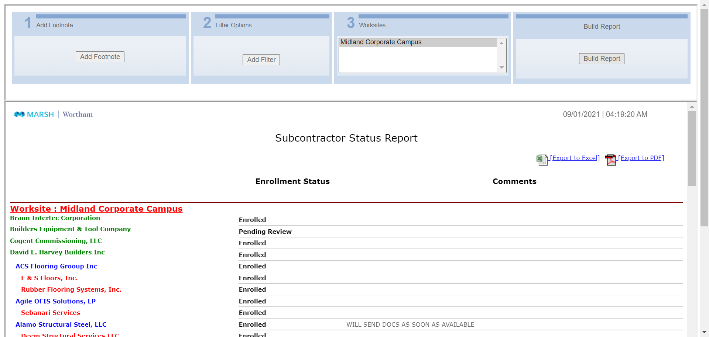 14:49:23 Report Header Name Matched 14:49:23 Report Generated Successfully 14:49:31 Pdf Generated 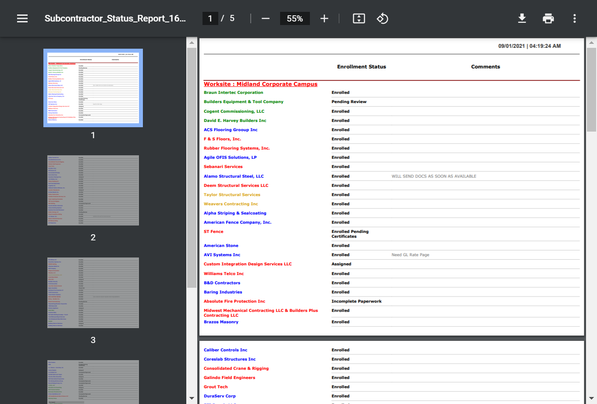 14:49:46 Excel file is not Downloaded Successfully 14:49:57 testSubcontractorStatusReportOld Test has been Passed1 14:49:57 Test Ended -
Report_StatusReportOld_Test :: testStatusReportOld fail2021-09-01 14:50:10 2021-09-01 14:52:14 0h 2m 4s+443mstestStatusReportOldFunctional Test
Status Timestamp Details 14:50:10 Test Started 14:50:10 Browser Name chrome 14:50:54 https://beta.wrapportal.com/login.aspx?ReturnUrl=%2f Current Url 14:50:54 nourwortham User Name Entered Successfully 14:50:54 C!d9&;MF%R Password Entered Successfully 14:50:55 Clicked On Login Button 14:50:55 Login Successfully 14:51:15 Clicked on Report Module Icon 14:51:18 Respective Program Select Form Dropdown 14:51:23 Status Report Report is Selected 14:51:31 Project Selected Successfully 14:51:34 Contractor Selected Successfully 14:51:38 Clicked On Build Report Button 14:51:41 Report Generated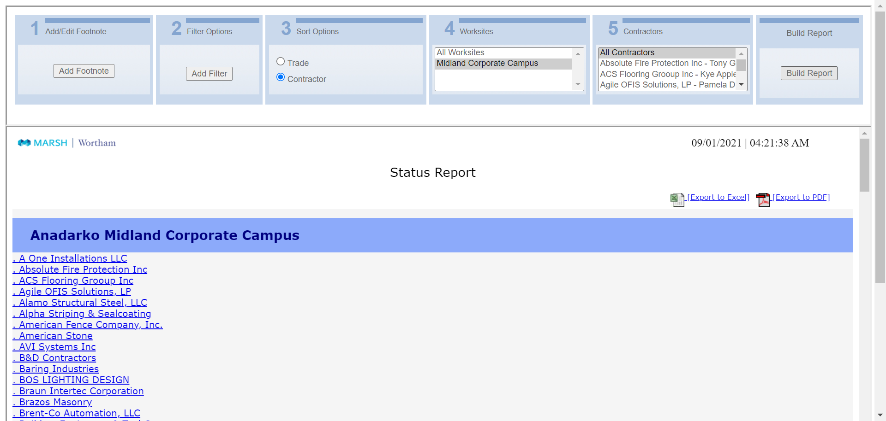 14:51:41 Report Header Name Matched 14:51:41 Report Generated Successfully 14:51:48 Pdf Generated 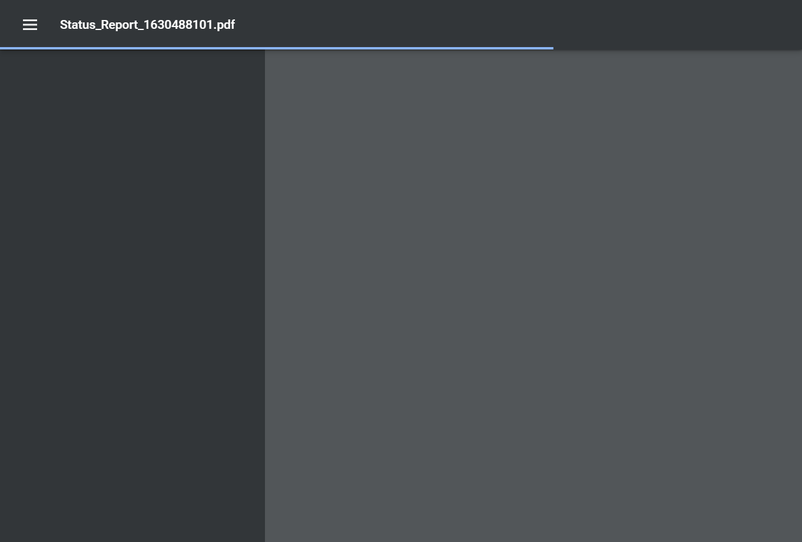 14:52:03 Excel file is not Downloaded Successfully 14:52:14 testStatusReportOld Test has been Passed1 14:52:14 Test Ended -
Report_ReportedPayrollByContractorWorkClassOldTest :: testReportedPayrollByContractorOld fail2021-09-01 14:52:29 2021-09-01 14:56:20 0h 3m 50s+845mstestReportedPayrollByContractorOldFunctional Test
Status Timestamp Details 14:52:29 Test Started 14:52:29 Browser Name chrome 14:53:12 https://beta.wrapportal.com/login.aspx?ReturnUrl=%2f Current Url 14:53:12 nourwortham User Name Entered Successfully 14:53:12 C!d9&;MF%R Password Entered Successfully 14:53:14 Clicked On Login Button 14:53:14 Login Successfully 14:53:35 Clicked on Report Module Icon 14:53:49 Respective Program Select Form Dropdown 14:53:55 Reported Payroll By Contractor Work Class Report is Selected 14:54:37 Project Selected Successfully 14:54:40 Contractor Selected Successfully 14:54:45 Clicked On Build Report Button 14:54:50 Report Generated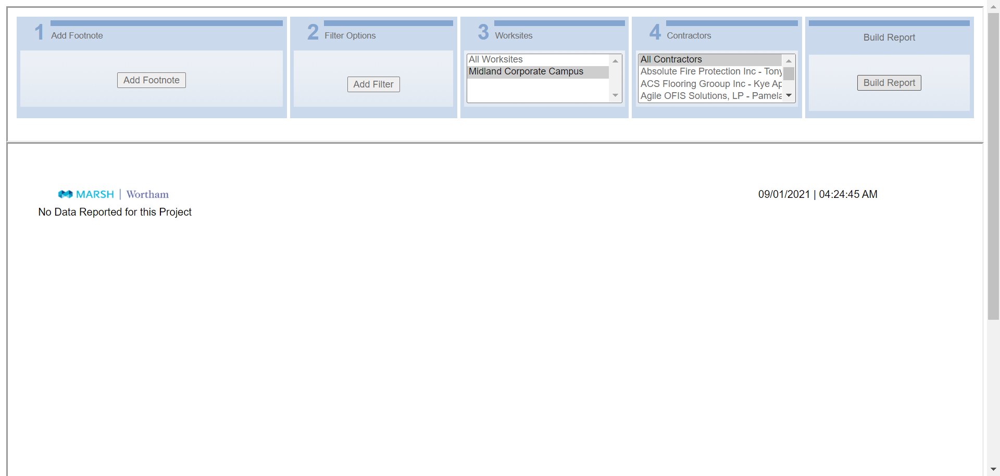 14:55:20 org.openqa.selenium.NoSuchElementException: no such element: Unable to locate element: {"method":"xpath","selector":"//*[contains(text(),'Reported Payroll By Contractor Work Class ')]"} (Session info: chrome=93.0.4577.63) For documentation on this error, please visit: https://selenium.dev/exceptions/#no_such_element Build info: version: '4.0.0-alpha-4', revision: 'c2d955b49e' System info: host: 'NOURTEK-100', ip: '192.168.29.211', os.name: 'Windows 10', os.arch: 'amd64', os.version: '10.0', java.version: '15.0.2' Driver info: org.openqa.selenium.chrome.ChromeDriver Capabilities {acceptInsecureCerts: false, browserName: chrome, browserVersion: 93.0.4577.63, chrome: {chromedriverVersion: 92.0.4515.107 (87a818b10553..., userDataDir: C:\Users\NDave\AppData\Loca...}, goog:chromeOptions: {debuggerAddress: localhost:53937}, javascriptEnabled: true, networkConnectionEnabled: false, pageLoadStrategy: normal, platform: WINDOWS, platformName: WINDOWS, proxy: Proxy(), setWindowRect: true, strictFileInteractability: false, timeouts: {implicit: 0, pageLoad: 300000, script: 30000}, unhandledPromptBehavior: dismiss and notify, webauthn:extension:credBlob: true, webauthn:extension:largeBlob: true, webauthn:virtualAuthenticators: true} Session ID: fe6b64e561ddbb85164f7a3142ddfc3d *** Element info: {Using=xpath, value=//*[contains(text(),'Reported Payroll By Contractor Work Class ')]}Report Header Name Not Matched 14:55:20 Something Went Wrong 
14:56:20 testReportedPayrollByContractorOld Test has been Failed2 14:56:20 org.openqa.selenium.NoSuchElementException: no such element: Unable to locate element: {"method":"xpath","selector":"//a[@id='HlinkExportExcel']"} (Session info: chrome=93.0.4577.63) For documentation on this error, please visit: https://selenium.dev/exceptions/#no_such_element Build info: version: '4.0.0-alpha-4', revision: 'c2d955b49e' System info: host: 'NOURTEK-100', ip: '192.168.29.211', os.name: 'Windows 10', os.arch: 'amd64', os.version: '10.0', java.version: '15.0.2' Driver info: org.openqa.selenium.chrome.ChromeDriver Capabilities {acceptInsecureCerts: false, browserName: chrome, browserVersion: 93.0.4577.63, chrome: {chromedriverVersion: 92.0.4515.107 (87a818b10553..., userDataDir: C:\Users\NDave\AppData\Loca...}, goog:chromeOptions: {debuggerAddress: localhost:53937}, javascriptEnabled: true, networkConnectionEnabled: false, pageLoadStrategy: normal, platform: WINDOWS, platformName: WINDOWS, proxy: Proxy(), setWindowRect: true, strictFileInteractability: false, timeouts: {implicit: 0, pageLoad: 300000, script: 30000}, unhandledPromptBehavior: dismiss and notify, webauthn:extension:credBlob: true, webauthn:extension:largeBlob: true, webauthn:virtualAuthenticators: true} Session ID: fe6b64e561ddbb85164f7a3142ddfc3d *** Element info: {Using=xpath, value=//a[@id='HlinkExportExcel']} at java.base/jdk.internal.reflect.NativeConstructorAccessorImpl.newInstance0(Native Method) at java.base/jdk.internal.reflect.NativeConstructorAccessorImpl.newInstance(NativeConstructorAccessorImpl.java:64) at java.base/jdk.internal.reflect.DelegatingConstructorAccessorImpl.newInstance(DelegatingConstructorAccessorImpl.java:45) at java.base/java.lang.reflect.Constructor.newInstanceWithCaller(Constructor.java:500) at java.base/java.lang.reflect.Constructor.newInstance(Constructor.java:481) at org.openqa.selenium.remote.codec.w3c.W3CHttpResponseCodec.createException(W3CHttpResponseCodec.java:196) at org.openqa.selenium.remote.codec.w3c.W3CHttpResponseCodec.decode(W3CHttpResponseCodec.java:129) at org.openqa.selenium.remote.codec.w3c.W3CHttpResponseCodec.decode(W3CHttpResponseCodec.java:53) at org.openqa.selenium.remote.HttpCommandExecutor.execute(HttpCommandExecutor.java:161) at org.openqa.selenium.remote.service.DriverCommandExecutor.execute(DriverCommandExecutor.java:83) at org.openqa.selenium.remote.RemoteWebDriver.execute(RemoteWebDriver.java:582) at org.openqa.selenium.remote.RemoteWebDriver.findElement(RemoteWebDriver.java:333) at org.openqa.selenium.remote.RemoteWebDriver.findElementByXPath(RemoteWebDriver.java:451) at org.openqa.selenium.By$ByXPath.findElement(By.java:394) at org.openqa.selenium.remote.RemoteWebDriver.findElement(RemoteWebDriver.java:325) at ObjectRepository.Report_EnrollmentListReportOld.linkExportToExcel(Report_EnrollmentListReportOld.java:80) at TestScript.Report_ReportedPayrollByContractorWorkClassOldTest.testReportedPayrollByContractorOld(Report_ReportedPayrollByContractorWorkClassOldTest.java:100) at java.base/jdk.internal.reflect.NativeMethodAccessorImpl.invoke0(Native Method) at java.base/jdk.internal.reflect.NativeMethodAccessorImpl.invoke(NativeMethodAccessorImpl.java:64) at java.base/jdk.internal.reflect.DelegatingMethodAccessorImpl.invoke(DelegatingMethodAccessorImpl.java:43) at java.base/java.lang.reflect.Method.invoke(Method.java:564) at org.testng.internal.MethodInvocationHelper.invokeMethod(MethodInvocationHelper.java:133) at org.testng.internal.TestInvoker.invokeMethod(TestInvoker.java:598) at org.testng.internal.TestInvoker.invokeTestMethod(TestInvoker.java:173) at org.testng.internal.MethodRunner.runInSequence(MethodRunner.java:46) at org.testng.internal.TestInvoker$MethodInvocationAgent.invoke(TestInvoker.java:824) at org.testng.internal.TestInvoker.invokeTestMethods(TestInvoker.java:146) at org.testng.internal.TestMethodWorker.invokeTestMethods(TestMethodWorker.java:146) at org.testng.internal.TestMethodWorker.run(TestMethodWorker.java:128) at java.base/java.util.ArrayList.forEach(ArrayList.java:1511) at org.testng.TestRunner.privateRun(TestRunner.java:794) at org.testng.TestRunner.run(TestRunner.java:596) at org.testng.SuiteRunner.runTest(SuiteRunner.java:377) at org.testng.SuiteRunner.runSequentially(SuiteRunner.java:371) at org.testng.SuiteRunner.privateRun(SuiteRunner.java:332) at org.testng.SuiteRunner.run(SuiteRunner.java:276) at org.testng.SuiteRunnerWorker.runSuite(SuiteRunnerWorker.java:53) at org.testng.SuiteRunnerWorker.run(SuiteRunnerWorker.java:96) at org.testng.TestNG.runSuitesSequentially(TestNG.java:1212) at org.testng.TestNG.runSuitesLocally(TestNG.java:1134) at org.testng.TestNG.runSuites(TestNG.java:1063) at org.testng.TestNG.run(TestNG.java:1031) at org.testng.remote.AbstractRemoteTestNG.run(AbstractRemoteTestNG.java:115) at org.testng.remote.RemoteTestNG.initAndRun(RemoteTestNG.java:251) at org.testng.remote.RemoteTestNG.main(RemoteTestNG.java:77)14:56:20 14:56:20 Test Ended -
Report_QuarterlyEnrollmenteportOld_Test :: testQuarterlyEnrollmenteportOld fail2021-09-01 14:57:02 2021-09-01 14:58:55 0h 1m 52s+663mstestQuarterlyEnrollmenteportOldFunctional Test
Status Timestamp Details 14:57:02 Test Started 14:57:02 Browser Name chrome 14:57:47 https://beta.wrapportal.com/login.aspx?ReturnUrl=%2f Current Url 14:57:47 nourwortham User Name Entered Successfully 14:57:47 C!d9&;MF%R Password Entered Successfully 14:57:48 Clicked On Login Button 14:57:48 Login Successfully 14:58:04 Clicked on Report Module Icon 14:58:06 Respective Program Select Form Dropdown 14:58:12 Quarterly Enrollment Report Report is Selected 14:58:23 Project Selected Successfully 14:58:26 Contractor Selected Successfully 14:58:30 Clicked On Build Report Button 14:58:34 Report Generated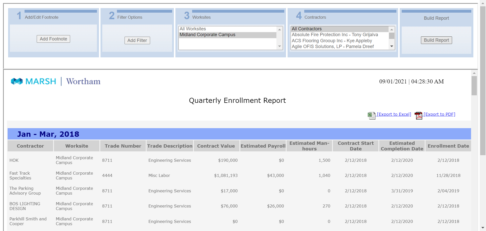 14:58:34 Report Header Name Matched 14:58:34 Report Generated Successfully 14:58:44 Excel file is not Downloaded Successfully 14:58:55 testQuarterlyEnrollmenteportOld Test has been Passed1 14:58:55 Test Ended -
Report_ProjectFinancialAnalysisWorkClass_Old_Test :: testProjectFinancialAnalysisWorkClasstOld fail2021-09-01 14:59:11 2021-09-01 15:01:48 0h 2m 36s+721mstestProjectFinancialAnalysisWorkClasstOldFunctional Test
Status Timestamp Details 14:59:11 Test Started 14:59:11 Browser Name chrome 14:59:42 https://beta.wrapportal.com/login.aspx?ReturnUrl=%2f Current Url 14:59:42 nourwortham User Name Entered Successfully 14:59:43 C!d9&;MF%R Password Entered Successfully 14:59:44 Clicked On Login Button 14:59:44 Login Successfully 15:00:05 Clicked on Report Module Icon 15:00:08 Respective Program Select Form Dropdown 15:00:20 Project Financial Analysis Work Class Report is Selected 15:00:36 Project Selected Successfully 15:00:39 Contractor Selected Successfully 15:00:44 Clicked On Build Report Button 15:00:47 Report Generated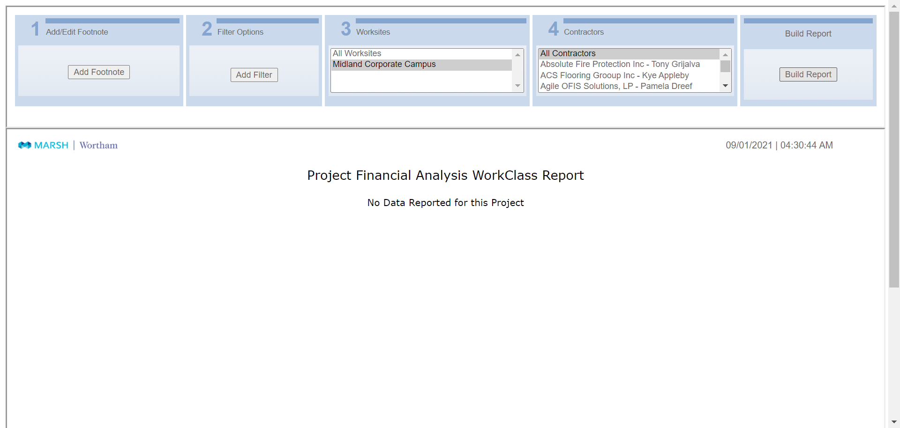 15:00:47 Report Header Name Matched 15:00:47 Report Generated Successfully 15:01:48 testProjectFinancialAnalysisWorkClasstOld Test has been Failed2 15:01:48 org.openqa.selenium.NoSuchElementException: no such element: Unable to locate element: {"method":"xpath","selector":"//a[@id='HlinkExportExcel']"} (Session info: chrome=93.0.4577.63) For documentation on this error, please visit: https://selenium.dev/exceptions/#no_such_element Build info: version: '4.0.0-alpha-4', revision: 'c2d955b49e' System info: host: 'NOURTEK-100', ip: '192.168.29.211', os.name: 'Windows 10', os.arch: 'amd64', os.version: '10.0', java.version: '15.0.2' Driver info: org.openqa.selenium.chrome.ChromeDriver Capabilities {acceptInsecureCerts: false, browserName: chrome, browserVersion: 93.0.4577.63, chrome: {chromedriverVersion: 92.0.4515.107 (87a818b10553..., userDataDir: C:\Users\NDave\AppData\Loca...}, goog:chromeOptions: {debuggerAddress: localhost:54911}, javascriptEnabled: true, networkConnectionEnabled: false, pageLoadStrategy: normal, platform: WINDOWS, platformName: WINDOWS, proxy: Proxy(), setWindowRect: true, strictFileInteractability: false, timeouts: {implicit: 0, pageLoad: 300000, script: 30000}, unhandledPromptBehavior: dismiss and notify, webauthn:extension:credBlob: true, webauthn:extension:largeBlob: true, webauthn:virtualAuthenticators: true} Session ID: 147c14e340e202920b19d895e7af4769 *** Element info: {Using=xpath, value=//a[@id='HlinkExportExcel']} at java.base/jdk.internal.reflect.NativeConstructorAccessorImpl.newInstance0(Native Method) at java.base/jdk.internal.reflect.NativeConstructorAccessorImpl.newInstance(NativeConstructorAccessorImpl.java:64) at java.base/jdk.internal.reflect.DelegatingConstructorAccessorImpl.newInstance(DelegatingConstructorAccessorImpl.java:45) at java.base/java.lang.reflect.Constructor.newInstanceWithCaller(Constructor.java:500) at java.base/java.lang.reflect.Constructor.newInstance(Constructor.java:481) at org.openqa.selenium.remote.codec.w3c.W3CHttpResponseCodec.createException(W3CHttpResponseCodec.java:196) at org.openqa.selenium.remote.codec.w3c.W3CHttpResponseCodec.decode(W3CHttpResponseCodec.java:129) at org.openqa.selenium.remote.codec.w3c.W3CHttpResponseCodec.decode(W3CHttpResponseCodec.java:53) at org.openqa.selenium.remote.HttpCommandExecutor.execute(HttpCommandExecutor.java:161) at org.openqa.selenium.remote.service.DriverCommandExecutor.execute(DriverCommandExecutor.java:83) at org.openqa.selenium.remote.RemoteWebDriver.execute(RemoteWebDriver.java:582) at org.openqa.selenium.remote.RemoteWebDriver.findElement(RemoteWebDriver.java:333) at org.openqa.selenium.remote.RemoteWebDriver.findElementByXPath(RemoteWebDriver.java:451) at org.openqa.selenium.By$ByXPath.findElement(By.java:394) at org.openqa.selenium.remote.RemoteWebDriver.findElement(RemoteWebDriver.java:325) at ObjectRepository.Report_EnrollmentListReportOld.linkExportToExcel(Report_EnrollmentListReportOld.java:80) at TestScript.Report_ProjectFinancialAnalysisWorkClass_Old_Test.testProjectFinancialAnalysisWorkClasstOld(Report_ProjectFinancialAnalysisWorkClass_Old_Test.java:105) at java.base/jdk.internal.reflect.NativeMethodAccessorImpl.invoke0(Native Method) at java.base/jdk.internal.reflect.NativeMethodAccessorImpl.invoke(NativeMethodAccessorImpl.java:64) at java.base/jdk.internal.reflect.DelegatingMethodAccessorImpl.invoke(DelegatingMethodAccessorImpl.java:43) at java.base/java.lang.reflect.Method.invoke(Method.java:564) at org.testng.internal.MethodInvocationHelper.invokeMethod(MethodInvocationHelper.java:133) at org.testng.internal.TestInvoker.invokeMethod(TestInvoker.java:598) at org.testng.internal.TestInvoker.invokeTestMethod(TestInvoker.java:173) at org.testng.internal.MethodRunner.runInSequence(MethodRunner.java:46) at org.testng.internal.TestInvoker$MethodInvocationAgent.invoke(TestInvoker.java:824) at org.testng.internal.TestInvoker.invokeTestMethods(TestInvoker.java:146) at org.testng.internal.TestMethodWorker.invokeTestMethods(TestMethodWorker.java:146) at org.testng.internal.TestMethodWorker.run(TestMethodWorker.java:128) at java.base/java.util.ArrayList.forEach(ArrayList.java:1511) at org.testng.TestRunner.privateRun(TestRunner.java:794) at org.testng.TestRunner.run(TestRunner.java:596) at org.testng.SuiteRunner.runTest(SuiteRunner.java:377) at org.testng.SuiteRunner.runSequentially(SuiteRunner.java:371) at org.testng.SuiteRunner.privateRun(SuiteRunner.java:332) at org.testng.SuiteRunner.run(SuiteRunner.java:276) at org.testng.SuiteRunnerWorker.runSuite(SuiteRunnerWorker.java:53) at org.testng.SuiteRunnerWorker.run(SuiteRunnerWorker.java:96) at org.testng.TestNG.runSuitesSequentially(TestNG.java:1212) at org.testng.TestNG.runSuitesLocally(TestNG.java:1134) at org.testng.TestNG.runSuites(TestNG.java:1063) at org.testng.TestNG.run(TestNG.java:1031) at org.testng.remote.AbstractRemoteTestNG.run(AbstractRemoteTestNG.java:115) at org.testng.remote.RemoteTestNG.initAndRun(RemoteTestNG.java:251) at org.testng.remote.RemoteTestNG.main(RemoteTestNG.java:77)15:01:48 15:01:48 Test Ended -
Report_ProjectFinancialAnalysisOld_Test :: testProjectFinancialAnalysisReport fail2021-09-01 15:02:32 2021-09-01 15:05:44 0h 3m 12s+113mstestProjectFinancialAnalysisReportFunctional Test
Status Timestamp Details 15:02:32 Test Started 15:02:32 Browser Name chrome 15:03:25 https://beta.wrapportal.com/login.aspx?ReturnUrl=%2f Current Url 15:03:25 nourwortham User Name Entered Successfully 15:03:25 C!d9&;MF%R Password Entered Successfully 15:03:26 Clicked On Login Button 15:03:26 Login Successfully 15:03:47 Clicked on Report Module Icon 15:03:49 Respective Program Select Form Dropdown 15:03:58 Project Financial Analysis Report is Selected 15:04:07 Project Selected Successfully 15:04:10 Contractor Selected Successfully 15:04:15 Clicked On Build Report Button 15:04:18 Report Generated 15:04:53 org.openqa.selenium.NoSuchElementException: no such element: Unable to locate element: {"method":"xpath","selector":"//td[contains(text(),'Enrollment List')]"} (Session info: chrome=93.0.4577.63) For documentation on this error, please visit: https://selenium.dev/exceptions/#no_such_element Build info: version: '4.0.0-alpha-4', revision: 'c2d955b49e' System info: host: 'NOURTEK-100', ip: '192.168.29.211', os.name: 'Windows 10', os.arch: 'amd64', os.version: '10.0', java.version: '15.0.2' Driver info: org.openqa.selenium.chrome.ChromeDriver Capabilities {acceptInsecureCerts: false, browserName: chrome, browserVersion: 93.0.4577.63, chrome: {chromedriverVersion: 92.0.4515.107 (87a818b10553..., userDataDir: C:\Users\NDave\AppData\Loca...}, goog:chromeOptions: {debuggerAddress: localhost:51867}, javascriptEnabled: true, networkConnectionEnabled: false, pageLoadStrategy: normal, platform: WINDOWS, platformName: WINDOWS, proxy: Proxy(), setWindowRect: true, strictFileInteractability: false, timeouts: {implicit: 0, pageLoad: 300000, script: 30000}, unhandledPromptBehavior: dismiss and notify, webauthn:extension:credBlob: true, webauthn:extension:largeBlob: true, webauthn:virtualAuthenticators: true} Session ID: 1804b0ed0c7dd5a1cbb6e49608127e44 *** Element info: {Using=xpath, value=//td[contains(text(),'Enrollment List')]}Report Header Name Not Matched 15:04:53 Something Went Wrong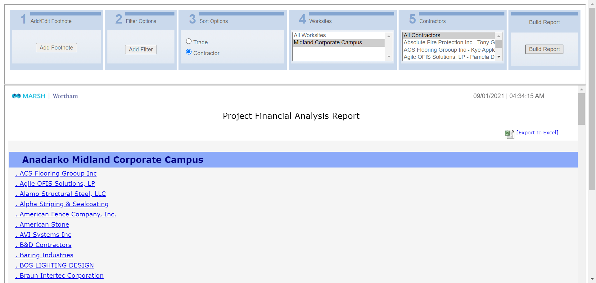 15:05:33 Excel file is not Downloaded Successfully 15:05:44 testProjectFinancialAnalysisReport Test has been Passed1 15:05:44 Test Ended -
Report_PayrollAuditSummaryByWorkClassOld_Test :: testPayrollAuditSummaryOld fail2021-09-01 15:05:57 2021-09-01 15:08:55 0h 2m 58s+126mstestPayrollAuditSummaryOldFunctional Test
Status Timestamp Details 15:05:57 Test Started 15:05:57 Browser Name chrome 15:07:01 https://beta.wrapportal.com/login.aspx?ReturnUrl=%2f Current Url 15:07:01 nourwortham User Name Entered Successfully 15:07:02 C!d9&;MF%R Password Entered Successfully 15:07:03 Clicked On Login Button 15:07:03 Login Successfully 15:07:22 Clicked on Report Module Icon 15:07:24 Respective Program Select Form Dropdown 15:07:29 Payroll Audit Summar By Work Class Report is Selected 15:07:38 Project Selected Successfully 15:07:41 Contractor Selected Successfully 15:07:45 Clicked On Build Report Button 15:07:50 Report Generated 
15:08:25 org.openqa.selenium.NoSuchElementException: no such element: Unable to locate element: {"method":"xpath","selector":"//body/table/tbody/tr[4]/td[1]"} (Session info: chrome=93.0.4577.63) For documentation on this error, please visit: https://selenium.dev/exceptions/#no_such_element Build info: version: '4.0.0-alpha-4', revision: 'c2d955b49e' System info: host: 'NOURTEK-100', ip: '192.168.29.211', os.name: 'Windows 10', os.arch: 'amd64', os.version: '10.0', java.version: '15.0.2' Driver info: org.openqa.selenium.chrome.ChromeDriver Capabilities {acceptInsecureCerts: false, browserName: chrome, browserVersion: 93.0.4577.63, chrome: {chromedriverVersion: 92.0.4515.107 (87a818b10553..., userDataDir: C:\Users\NDave\AppData\Loca...}, goog:chromeOptions: {debuggerAddress: localhost:59874}, javascriptEnabled: true, networkConnectionEnabled: false, pageLoadStrategy: normal, platform: WINDOWS, platformName: WINDOWS, proxy: Proxy(), setWindowRect: true, strictFileInteractability: false, timeouts: {implicit: 0, pageLoad: 300000, script: 30000}, unhandledPromptBehavior: dismiss and notify, webauthn:extension:credBlob: true, webauthn:extension:largeBlob: true, webauthn:virtualAuthenticators: true} Session ID: c7207967b8bf023bb5eb24576caf45ba *** Element info: {Using=xpath, value=//body/table/tbody/tr[4]/td[1]}Report Header Name Not Matched 15:08:25 Something Went Wrong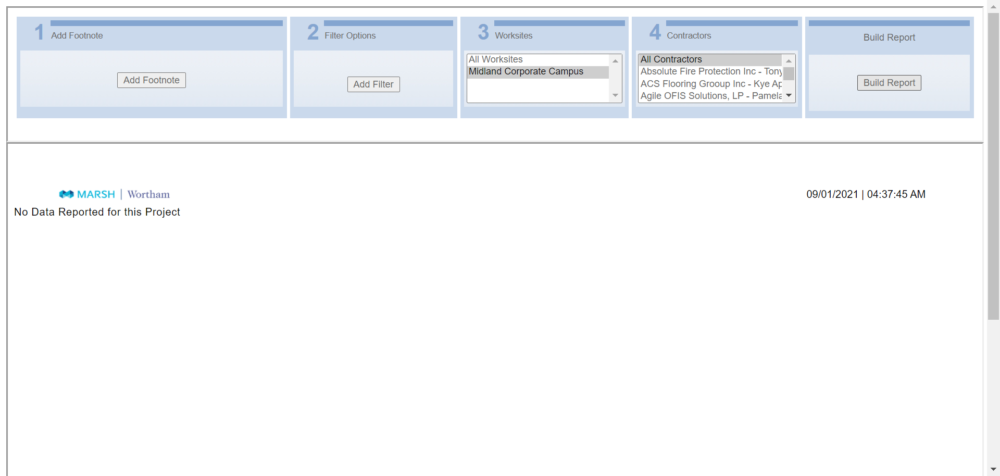 15:08:55 testPayrollAuditSummaryOld Test has been Failed2 15:08:55 org.openqa.selenium.NoSuchElementException: no such element: Unable to locate element: {"method":"xpath","selector":"//a[@id='HlinkExportPDF']"} (Session info: chrome=93.0.4577.63) For documentation on this error, please visit: https://selenium.dev/exceptions/#no_such_element Build info: version: '4.0.0-alpha-4', revision: 'c2d955b49e' System info: host: 'NOURTEK-100', ip: '192.168.29.211', os.name: 'Windows 10', os.arch: 'amd64', os.version: '10.0', java.version: '15.0.2' Driver info: org.openqa.selenium.chrome.ChromeDriver Capabilities {acceptInsecureCerts: false, browserName: chrome, browserVersion: 93.0.4577.63, chrome: {chromedriverVersion: 92.0.4515.107 (87a818b10553..., userDataDir: C:\Users\NDave\AppData\Loca...}, goog:chromeOptions: {debuggerAddress: localhost:59874}, javascriptEnabled: true, networkConnectionEnabled: false, pageLoadStrategy: normal, platform: WINDOWS, platformName: WINDOWS, proxy: Proxy(), setWindowRect: true, strictFileInteractability: false, timeouts: {implicit: 0, pageLoad: 300000, script: 30000}, unhandledPromptBehavior: dismiss and notify, webauthn:extension:credBlob: true, webauthn:extension:largeBlob: true, webauthn:virtualAuthenticators: true} Session ID: c7207967b8bf023bb5eb24576caf45ba *** Element info: {Using=xpath, value=//a[@id='HlinkExportPDF']} at java.base/jdk.internal.reflect.NativeConstructorAccessorImpl.newInstance0(Native Method) at java.base/jdk.internal.reflect.NativeConstructorAccessorImpl.newInstance(NativeConstructorAccessorImpl.java:64) at java.base/jdk.internal.reflect.DelegatingConstructorAccessorImpl.newInstance(DelegatingConstructorAccessorImpl.java:45) at java.base/java.lang.reflect.Constructor.newInstanceWithCaller(Constructor.java:500) at java.base/java.lang.reflect.Constructor.newInstance(Constructor.java:481) at org.openqa.selenium.remote.codec.w3c.W3CHttpResponseCodec.createException(W3CHttpResponseCodec.java:196) at org.openqa.selenium.remote.codec.w3c.W3CHttpResponseCodec.decode(W3CHttpResponseCodec.java:129) at org.openqa.selenium.remote.codec.w3c.W3CHttpResponseCodec.decode(W3CHttpResponseCodec.java:53) at org.openqa.selenium.remote.HttpCommandExecutor.execute(HttpCommandExecutor.java:161) at org.openqa.selenium.remote.service.DriverCommandExecutor.execute(DriverCommandExecutor.java:83) at org.openqa.selenium.remote.RemoteWebDriver.execute(RemoteWebDriver.java:582) at org.openqa.selenium.remote.RemoteWebDriver.findElement(RemoteWebDriver.java:333) at org.openqa.selenium.remote.RemoteWebDriver.findElementByXPath(RemoteWebDriver.java:451) at org.openqa.selenium.By$ByXPath.findElement(By.java:394) at org.openqa.selenium.remote.RemoteWebDriver.findElement(RemoteWebDriver.java:325) at ObjectRepository.Report_PayrollAuditSummaryOld.linkExportToPDF(Report_PayrollAuditSummaryOld.java:90) at TestScript.Report_PayrollAuditSummaryByWorkClassOld_Test.testPayrollAuditSummaryOld(Report_PayrollAuditSummaryByWorkClassOld_Test.java:87) at java.base/jdk.internal.reflect.NativeMethodAccessorImpl.invoke0(Native Method) at java.base/jdk.internal.reflect.NativeMethodAccessorImpl.invoke(NativeMethodAccessorImpl.java:64) at java.base/jdk.internal.reflect.DelegatingMethodAccessorImpl.invoke(DelegatingMethodAccessorImpl.java:43) at java.base/java.lang.reflect.Method.invoke(Method.java:564) at org.testng.internal.MethodInvocationHelper.invokeMethod(MethodInvocationHelper.java:133) at org.testng.internal.TestInvoker.invokeMethod(TestInvoker.java:598) at org.testng.internal.TestInvoker.invokeTestMethod(TestInvoker.java:173) at org.testng.internal.MethodRunner.runInSequence(MethodRunner.java:46) at org.testng.internal.TestInvoker$MethodInvocationAgent.invoke(TestInvoker.java:824) at org.testng.internal.TestInvoker.invokeTestMethods(TestInvoker.java:146) at org.testng.internal.TestMethodWorker.invokeTestMethods(TestMethodWorker.java:146) at org.testng.internal.TestMethodWorker.run(TestMethodWorker.java:128) at java.base/java.util.ArrayList.forEach(ArrayList.java:1511) at org.testng.TestRunner.privateRun(TestRunner.java:794) at org.testng.TestRunner.run(TestRunner.java:596) at org.testng.SuiteRunner.runTest(SuiteRunner.java:377) at org.testng.SuiteRunner.runSequentially(SuiteRunner.java:371) at org.testng.SuiteRunner.privateRun(SuiteRunner.java:332) at org.testng.SuiteRunner.run(SuiteRunner.java:276) at org.testng.SuiteRunnerWorker.runSuite(SuiteRunnerWorker.java:53) at org.testng.SuiteRunnerWorker.run(SuiteRunnerWorker.java:96) at org.testng.TestNG.runSuitesSequentially(TestNG.java:1212) at org.testng.TestNG.runSuitesLocally(TestNG.java:1134) at org.testng.TestNG.runSuites(TestNG.java:1063) at org.testng.TestNG.run(TestNG.java:1031) at org.testng.remote.AbstractRemoteTestNG.run(AbstractRemoteTestNG.java:115) at org.testng.remote.RemoteTestNG.initAndRun(RemoteTestNG.java:251) at org.testng.remote.RemoteTestNG.main(RemoteTestNG.java:77)15:08:55 15:08:55 Test Ended -
Report_MissingPayrollbyContractorOld_Test :: testMissingPayrollbyContractorOld fail2021-09-01 15:09:34 2021-09-01 15:11:36 0h 2m 2s+933mstestMissingPayrollbyContractorOldFunctional Test
Status Timestamp Details 15:09:34 Test Started 15:09:34 Browser Name chrome 15:10:13 https://beta.wrapportal.com/login.aspx?ReturnUrl=%2f Current Url 15:10:13 nourwortham User Name Entered Successfully 15:10:13 C!d9&;MF%R Password Entered Successfully 15:10:15 Clicked On Login Button 15:10:15 Login Successfully 15:10:29 Clicked on Report Module Icon 15:10:31 Respective Program Select Form Dropdown 15:11:06 Something Went Wrong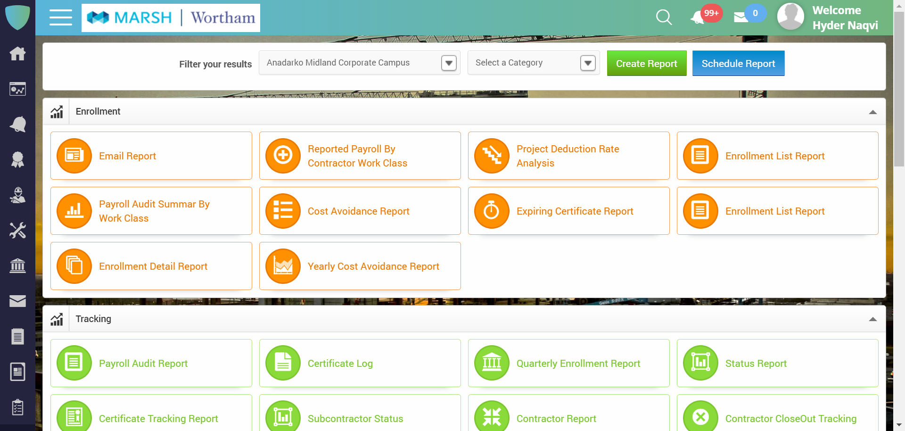 15:11:06 org.openqa.selenium.NoSuchFrameException: no such frame (Session info: chrome=93.0.4577.63) Build info: version: '4.0.0-alpha-4', revision: 'c2d955b49e' System info: host: 'NOURTEK-100', ip: '192.168.29.211', os.name: 'Windows 10', os.arch: 'amd64', os.version: '10.0', java.version: '15.0.2' Driver info: org.openqa.selenium.chrome.ChromeDriver Capabilities {acceptInsecureCerts: false, browserName: chrome, browserVersion: 93.0.4577.63, chrome: {chromedriverVersion: 92.0.4515.107 (87a818b10553..., userDataDir: C:\Users\NDave\AppData\Loca...}, goog:chromeOptions: {debuggerAddress: localhost:53336}, javascriptEnabled: true, networkConnectionEnabled: false, pageLoadStrategy: normal, platform: WINDOWS, platformName: WINDOWS, proxy: Proxy(), setWindowRect: true, strictFileInteractability: false, timeouts: {implicit: 0, pageLoad: 300000, script: 30000}, unhandledPromptBehavior: dismiss and notify, webauthn:extension:credBlob: true, webauthn:extension:largeBlob: true, webauthn:virtualAuthenticators: true} Session ID: 004e9e763b85da778922d22575a06424Report Header Name Not Matched 15:11:36 testMissingPayrollbyContractorOld Test has been Failed2 15:11:36 org.openqa.selenium.NoSuchFrameException: no such frame (Session info: chrome=93.0.4577.63) Build info: version: '4.0.0-alpha-4', revision: 'c2d955b49e' System info: host: 'NOURTEK-100', ip: '192.168.29.211', os.name: 'Windows 10', os.arch: 'amd64', os.version: '10.0', java.version: '15.0.2' Driver info: org.openqa.selenium.chrome.ChromeDriver Capabilities {acceptInsecureCerts: false, browserName: chrome, browserVersion: 93.0.4577.63, chrome: {chromedriverVersion: 92.0.4515.107 (87a818b10553..., userDataDir: C:\Users\NDave\AppData\Loca...}, goog:chromeOptions: {debuggerAddress: localhost:53336}, javascriptEnabled: true, networkConnectionEnabled: false, pageLoadStrategy: normal, platform: WINDOWS, platformName: WINDOWS, proxy: Proxy(), setWindowRect: true, strictFileInteractability: false, timeouts: {implicit: 0, pageLoad: 300000, script: 30000}, unhandledPromptBehavior: dismiss and notify, webauthn:extension:credBlob: true, webauthn:extension:largeBlob: true, webauthn:virtualAuthenticators: true} Session ID: 004e9e763b85da778922d22575a06424 at java.base/jdk.internal.reflect.NativeConstructorAccessorImpl.newInstance0(Native Method) at java.base/jdk.internal.reflect.NativeConstructorAccessorImpl.newInstance(NativeConstructorAccessorImpl.java:64) at java.base/jdk.internal.reflect.DelegatingConstructorAccessorImpl.newInstance(DelegatingConstructorAccessorImpl.java:45) at java.base/java.lang.reflect.Constructor.newInstanceWithCaller(Constructor.java:500) at java.base/java.lang.reflect.Constructor.newInstance(Constructor.java:481) at org.openqa.selenium.remote.codec.w3c.W3CHttpResponseCodec.createException(W3CHttpResponseCodec.java:196) at org.openqa.selenium.remote.codec.w3c.W3CHttpResponseCodec.decode(W3CHttpResponseCodec.java:129) at org.openqa.selenium.remote.codec.w3c.W3CHttpResponseCodec.decode(W3CHttpResponseCodec.java:53) at org.openqa.selenium.remote.HttpCommandExecutor.execute(HttpCommandExecutor.java:161) at org.openqa.selenium.remote.service.DriverCommandExecutor.execute(DriverCommandExecutor.java:83) at org.openqa.selenium.remote.RemoteWebDriver.execute(RemoteWebDriver.java:582) at org.openqa.selenium.remote.RemoteWebDriver$RemoteTargetLocator.frame(RemoteWebDriver.java:945) at TestScript.Report_MissingPayrollbyContractorOld_Test.testMissingPayrollbyContractorOld(Report_MissingPayrollbyContractorOld_Test.java:100) at java.base/jdk.internal.reflect.NativeMethodAccessorImpl.invoke0(Native Method) at java.base/jdk.internal.reflect.NativeMethodAccessorImpl.invoke(NativeMethodAccessorImpl.java:64) at java.base/jdk.internal.reflect.DelegatingMethodAccessorImpl.invoke(DelegatingMethodAccessorImpl.java:43) at java.base/java.lang.reflect.Method.invoke(Method.java:564) at org.testng.internal.MethodInvocationHelper.invokeMethod(MethodInvocationHelper.java:133) at org.testng.internal.TestInvoker.invokeMethod(TestInvoker.java:598) at org.testng.internal.TestInvoker.invokeTestMethod(TestInvoker.java:173) at org.testng.internal.MethodRunner.runInSequence(MethodRunner.java:46) at org.testng.internal.TestInvoker$MethodInvocationAgent.invoke(TestInvoker.java:824) at org.testng.internal.TestInvoker.invokeTestMethods(TestInvoker.java:146) at org.testng.internal.TestMethodWorker.invokeTestMethods(TestMethodWorker.java:146) at org.testng.internal.TestMethodWorker.run(TestMethodWorker.java:128) at java.base/java.util.ArrayList.forEach(ArrayList.java:1511) at org.testng.TestRunner.privateRun(TestRunner.java:794) at org.testng.TestRunner.run(TestRunner.java:596) at org.testng.SuiteRunner.runTest(SuiteRunner.java:377) at org.testng.SuiteRunner.runSequentially(SuiteRunner.java:371) at org.testng.SuiteRunner.privateRun(SuiteRunner.java:332) at org.testng.SuiteRunner.run(SuiteRunner.java:276) at org.testng.SuiteRunnerWorker.runSuite(SuiteRunnerWorker.java:53) at org.testng.SuiteRunnerWorker.run(SuiteRunnerWorker.java:96) at org.testng.TestNG.runSuitesSequentially(TestNG.java:1212) at org.testng.TestNG.runSuitesLocally(TestNG.java:1134) at org.testng.TestNG.runSuites(TestNG.java:1063) at org.testng.TestNG.run(TestNG.java:1031) at org.testng.remote.AbstractRemoteTestNG.run(AbstractRemoteTestNG.java:115) at org.testng.remote.RemoteTestNG.initAndRun(RemoteTestNG.java:251) at org.testng.remote.RemoteTestNG.main(RemoteTestNG.java:77)15:11:36 15:11:36 Test Ended -
Report_ExpiringCertificateReportOld_Test :: testExpiringCertificateReportOld fail2021-09-01 15:11:51 2021-09-01 15:14:47 0h 2m 55s+201mstestExpiringCertificateReportOldFunctional Test
Status Timestamp Details 15:11:51 Test Started 15:11:51 Browser Name chrome 15:12:26 https://beta.wrapportal.com/login.aspx?ReturnUrl=%2f Current Url 15:12:26 nourwortham User Name Entered Successfully 15:12:26 C!d9&;MF%R Password Entered Successfully 15:12:27 Clicked On Login Button 15:12:27 Login Successfully 15:12:43 Clicked on Report Module Icon 15:12:45 Respective Program Select Form Dropdown 15:12:54 Expiring Certificate Report Report is Selected 15:13:06 Project Selected Successfully 15:13:09 Contractor Selected Successfully 15:13:13 Clicked On Build Report Button 15:13:16 Report Generated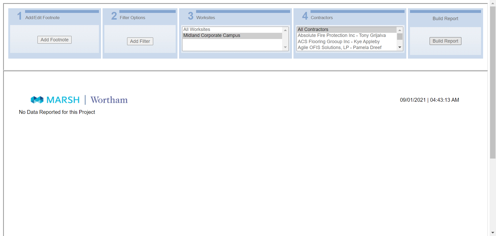 15:13:46 org.openqa.selenium.NoSuchElementException: no such element: Unable to locate element: {"method":"xpath","selector":"//body//tr[3]/td[1]"} (Session info: chrome=93.0.4577.63) For documentation on this error, please visit: https://selenium.dev/exceptions/#no_such_element Build info: version: '4.0.0-alpha-4', revision: 'c2d955b49e' System info: host: 'NOURTEK-100', ip: '192.168.29.211', os.name: 'Windows 10', os.arch: 'amd64', os.version: '10.0', java.version: '15.0.2' Driver info: org.openqa.selenium.chrome.ChromeDriver Capabilities {acceptInsecureCerts: false, browserName: chrome, browserVersion: 93.0.4577.63, chrome: {chromedriverVersion: 92.0.4515.107 (87a818b10553..., userDataDir: C:\Users\NDave\AppData\Loca...}, goog:chromeOptions: {debuggerAddress: localhost:56707}, javascriptEnabled: true, networkConnectionEnabled: false, pageLoadStrategy: normal, platform: WINDOWS, platformName: WINDOWS, proxy: Proxy(), setWindowRect: true, strictFileInteractability: false, timeouts: {implicit: 0, pageLoad: 300000, script: 30000}, unhandledPromptBehavior: dismiss and notify, webauthn:extension:credBlob: true, webauthn:extension:largeBlob: true, webauthn:virtualAuthenticators: true} Session ID: 0e097a082e30078edd9ec8e602938af8 *** Element info: {Using=xpath, value=//body//tr[3]/td[1]}Report Header Name Not Matched 15:13:46 Something Went Wrong 15:14:47 testExpiringCertificateReportOld Test has been Failed2 15:14:47 org.openqa.selenium.NoSuchElementException: no such element: Unable to locate element: {"method":"xpath","selector":"//a[@id='HlinkExportExcel']"} (Session info: chrome=93.0.4577.63) For documentation on this error, please visit: https://selenium.dev/exceptions/#no_such_element Build info: version: '4.0.0-alpha-4', revision: 'c2d955b49e' System info: host: 'NOURTEK-100', ip: '192.168.29.211', os.name: 'Windows 10', os.arch: 'amd64', os.version: '10.0', java.version: '15.0.2' Driver info: org.openqa.selenium.chrome.ChromeDriver Capabilities {acceptInsecureCerts: false, browserName: chrome, browserVersion: 93.0.4577.63, chrome: {chromedriverVersion: 92.0.4515.107 (87a818b10553..., userDataDir: C:\Users\NDave\AppData\Loca...}, goog:chromeOptions: {debuggerAddress: localhost:56707}, javascriptEnabled: true, networkConnectionEnabled: false, pageLoadStrategy: normal, platform: WINDOWS, platformName: WINDOWS, proxy: Proxy(), setWindowRect: true, strictFileInteractability: false, timeouts: {implicit: 0, pageLoad: 300000, script: 30000}, unhandledPromptBehavior: dismiss and notify, webauthn:extension:credBlob: true, webauthn:extension:largeBlob: true, webauthn:virtualAuthenticators: true} Session ID: 0e097a082e30078edd9ec8e602938af8 *** Element info: {Using=xpath, value=//a[@id='HlinkExportExcel']} at jdk.internal.reflect.GeneratedConstructorAccessor39.newInstance(Unknown Source) at java.base/jdk.internal.reflect.DelegatingConstructorAccessorImpl.newInstance(DelegatingConstructorAccessorImpl.java:45) at java.base/java.lang.reflect.Constructor.newInstanceWithCaller(Constructor.java:500) at java.base/java.lang.reflect.Constructor.newInstance(Constructor.java:481) at org.openqa.selenium.remote.codec.w3c.W3CHttpResponseCodec.createException(W3CHttpResponseCodec.java:196) at org.openqa.selenium.remote.codec.w3c.W3CHttpResponseCodec.decode(W3CHttpResponseCodec.java:129) at org.openqa.selenium.remote.codec.w3c.W3CHttpResponseCodec.decode(W3CHttpResponseCodec.java:53) at org.openqa.selenium.remote.HttpCommandExecutor.execute(HttpCommandExecutor.java:161) at org.openqa.selenium.remote.service.DriverCommandExecutor.execute(DriverCommandExecutor.java:83) at org.openqa.selenium.remote.RemoteWebDriver.execute(RemoteWebDriver.java:582) at org.openqa.selenium.remote.RemoteWebDriver.findElement(RemoteWebDriver.java:333) at org.openqa.selenium.remote.RemoteWebDriver.findElementByXPath(RemoteWebDriver.java:451) at org.openqa.selenium.By$ByXPath.findElement(By.java:394) at org.openqa.selenium.remote.RemoteWebDriver.findElement(RemoteWebDriver.java:325) at ObjectRepository.Report_EnrollmentListReportOld.linkExportToExcel(Report_EnrollmentListReportOld.java:80) at TestScript.Report_ExpiringCertificateReportOld_Test.testExpiringCertificateReportOld(Report_ExpiringCertificateReportOld_Test.java:95) at java.base/jdk.internal.reflect.NativeMethodAccessorImpl.invoke0(Native Method) at java.base/jdk.internal.reflect.NativeMethodAccessorImpl.invoke(NativeMethodAccessorImpl.java:64) at java.base/jdk.internal.reflect.DelegatingMethodAccessorImpl.invoke(DelegatingMethodAccessorImpl.java:43) at java.base/java.lang.reflect.Method.invoke(Method.java:564) at org.testng.internal.MethodInvocationHelper.invokeMethod(MethodInvocationHelper.java:133) at org.testng.internal.TestInvoker.invokeMethod(TestInvoker.java:598) at org.testng.internal.TestInvoker.invokeTestMethod(TestInvoker.java:173) at org.testng.internal.MethodRunner.runInSequence(MethodRunner.java:46) at org.testng.internal.TestInvoker$MethodInvocationAgent.invoke(TestInvoker.java:824) at org.testng.internal.TestInvoker.invokeTestMethods(TestInvoker.java:146) at org.testng.internal.TestMethodWorker.invokeTestMethods(TestMethodWorker.java:146) at org.testng.internal.TestMethodWorker.run(TestMethodWorker.java:128) at java.base/java.util.ArrayList.forEach(ArrayList.java:1511) at org.testng.TestRunner.privateRun(TestRunner.java:794) at org.testng.TestRunner.run(TestRunner.java:596) at org.testng.SuiteRunner.runTest(SuiteRunner.java:377) at org.testng.SuiteRunner.runSequentially(SuiteRunner.java:371) at org.testng.SuiteRunner.privateRun(SuiteRunner.java:332) at org.testng.SuiteRunner.run(SuiteRunner.java:276) at org.testng.SuiteRunnerWorker.runSuite(SuiteRunnerWorker.java:53) at org.testng.SuiteRunnerWorker.run(SuiteRunnerWorker.java:96) at org.testng.TestNG.runSuitesSequentially(TestNG.java:1212) at org.testng.TestNG.runSuitesLocally(TestNG.java:1134) at org.testng.TestNG.runSuites(TestNG.java:1063) at org.testng.TestNG.run(TestNG.java:1031) at org.testng.remote.AbstractRemoteTestNG.run(AbstractRemoteTestNG.java:115) at org.testng.remote.RemoteTestNG.initAndRun(RemoteTestNG.java:251) at org.testng.remote.RemoteTestNG.main(RemoteTestNG.java:77)15:14:47 
15:14:47 Test Ended -
Report_EnrollmentListReportOld_Test :: testEnrollmentListReportOld fail2021-09-01 15:15:28 2021-09-01 15:17:05 0h 1m 37s+106mstestEnrollmentListReportOldFunctional Test
Status Timestamp Details 15:15:28 Test Started 15:15:28 Browser Name chrome 15:15:58 https://beta.wrapportal.com/login.aspx?ReturnUrl=%2f Current Url 15:15:58 nourwortham User Name Entered Successfully 15:15:58 C!d9&;MF%R Password Entered Successfully 15:15:59 Clicked On Login Button 15:15:59 Login Successfully 15:16:16 Clicked on Report Module Icon 15:16:18 Respective Program Select Form Dropdown 15:16:24 Enrollment List Report Report is Selected 15:16:35 org.openqa.selenium.NoSuchFrameException: no such frame (Session info: chrome=93.0.4577.63) Build info: version: '4.0.0-alpha-4', revision: 'c2d955b49e' System info: host: 'NOURTEK-100', ip: '192.168.29.211', os.name: 'Windows 10', os.arch: 'amd64', os.version: '10.0', java.version: '15.0.2' Driver info: org.openqa.selenium.chrome.ChromeDriver Capabilities {acceptInsecureCerts: false, browserName: chrome, browserVersion: 93.0.4577.63, chrome: {chromedriverVersion: 92.0.4515.107 (87a818b10553..., userDataDir: C:\Users\NDave\AppData\Loca...}, goog:chromeOptions: {debuggerAddress: localhost:64357}, javascriptEnabled: true, networkConnectionEnabled: false, pageLoadStrategy: normal, platform: WINDOWS, platformName: WINDOWS, proxy: Proxy(), setWindowRect: true, strictFileInteractability: false, timeouts: {implicit: 0, pageLoad: 300000, script: 30000}, unhandledPromptBehavior: dismiss and notify, webauthn:extension:credBlob: true, webauthn:extension:largeBlob: true, webauthn:virtualAuthenticators: true} Session ID: 34708e0b7a0c7ed13383346a54b78030 Something Went Wrong 15:16:35 Something Went Wrong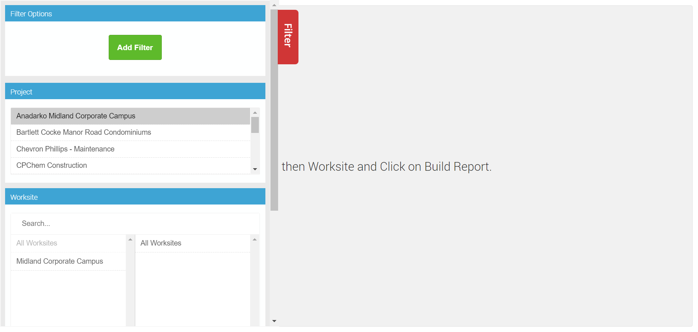 15:16:35 org.openqa.selenium.NoSuchFrameException: no such frame (Session info: chrome=93.0.4577.63) Build info: version: '4.0.0-alpha-4', revision: 'c2d955b49e' System info: host: 'NOURTEK-100', ip: '192.168.29.211', os.name: 'Windows 10', os.arch: 'amd64', os.version: '10.0', java.version: '15.0.2' Driver info: org.openqa.selenium.chrome.ChromeDriver Capabilities {acceptInsecureCerts: false, browserName: chrome, browserVersion: 93.0.4577.63, chrome: {chromedriverVersion: 92.0.4515.107 (87a818b10553..., userDataDir: C:\Users\NDave\AppData\Loca...}, goog:chromeOptions: {debuggerAddress: localhost:64357}, javascriptEnabled: true, networkConnectionEnabled: false, pageLoadStrategy: normal, platform: WINDOWS, platformName: WINDOWS, proxy: Proxy(), setWindowRect: true, strictFileInteractability: false, timeouts: {implicit: 0, pageLoad: 300000, script: 30000}, unhandledPromptBehavior: dismiss and notify, webauthn:extension:credBlob: true, webauthn:extension:largeBlob: true, webauthn:virtualAuthenticators: true} Session ID: 34708e0b7a0c7ed13383346a54b78030Report Header Name Not Matched 15:16:35 Something Went Wrong 15:17:05 testEnrollmentListReportOld Test has been Failed2 15:17:05 org.openqa.selenium.NoSuchElementException: no such element: Unable to locate element: {"method":"xpath","selector":"//a[@id='HlinkExportPDF']"} (Session info: chrome=93.0.4577.63) For documentation on this error, please visit: https://selenium.dev/exceptions/#no_such_element Build info: version: '4.0.0-alpha-4', revision: 'c2d955b49e' System info: host: 'NOURTEK-100', ip: '192.168.29.211', os.name: 'Windows 10', os.arch: 'amd64', os.version: '10.0', java.version: '15.0.2' Driver info: org.openqa.selenium.chrome.ChromeDriver Capabilities {acceptInsecureCerts: false, browserName: chrome, browserVersion: 93.0.4577.63, chrome: {chromedriverVersion: 92.0.4515.107 (87a818b10553..., userDataDir: C:\Users\NDave\AppData\Loca...}, goog:chromeOptions: {debuggerAddress: localhost:64357}, javascriptEnabled: true, networkConnectionEnabled: false, pageLoadStrategy: normal, platform: WINDOWS, platformName: WINDOWS, proxy: Proxy(), setWindowRect: true, strictFileInteractability: false, timeouts: {implicit: 0, pageLoad: 300000, script: 30000}, unhandledPromptBehavior: dismiss and notify, webauthn:extension:credBlob: true, webauthn:extension:largeBlob: true, webauthn:virtualAuthenticators: true} Session ID: 34708e0b7a0c7ed13383346a54b78030 *** Element info: {Using=xpath, value=//a[@id='HlinkExportPDF']} at jdk.internal.reflect.GeneratedConstructorAccessor39.newInstance(Unknown Source) at java.base/jdk.internal.reflect.DelegatingConstructorAccessorImpl.newInstance(DelegatingConstructorAccessorImpl.java:45) at java.base/java.lang.reflect.Constructor.newInstanceWithCaller(Constructor.java:500) at java.base/java.lang.reflect.Constructor.newInstance(Constructor.java:481) at org.openqa.selenium.remote.codec.w3c.W3CHttpResponseCodec.createException(W3CHttpResponseCodec.java:196) at org.openqa.selenium.remote.codec.w3c.W3CHttpResponseCodec.decode(W3CHttpResponseCodec.java:129) at org.openqa.selenium.remote.codec.w3c.W3CHttpResponseCodec.decode(W3CHttpResponseCodec.java:53) at org.openqa.selenium.remote.HttpCommandExecutor.execute(HttpCommandExecutor.java:161) at org.openqa.selenium.remote.service.DriverCommandExecutor.execute(DriverCommandExecutor.java:83) at org.openqa.selenium.remote.RemoteWebDriver.execute(RemoteWebDriver.java:582) at org.openqa.selenium.remote.RemoteWebDriver.findElement(RemoteWebDriver.java:333) at org.openqa.selenium.remote.RemoteWebDriver.findElementByXPath(RemoteWebDriver.java:451) at org.openqa.selenium.By$ByXPath.findElement(By.java:394) at org.openqa.selenium.remote.RemoteWebDriver.findElement(RemoteWebDriver.java:325) at ObjectRepository.Report_EnrollmentListReportOld.linkExportToPDF(Report_EnrollmentListReportOld.java:90) at TestScript.Report_EnrollmentListReportOld_Test.testEnrollmentListReportOld(Report_EnrollmentListReportOld_Test.java:74) at java.base/jdk.internal.reflect.NativeMethodAccessorImpl.invoke0(Native Method) at java.base/jdk.internal.reflect.NativeMethodAccessorImpl.invoke(NativeMethodAccessorImpl.java:64) at java.base/jdk.internal.reflect.DelegatingMethodAccessorImpl.invoke(DelegatingMethodAccessorImpl.java:43) at java.base/java.lang.reflect.Method.invoke(Method.java:564) at org.testng.internal.MethodInvocationHelper.invokeMethod(MethodInvocationHelper.java:133) at org.testng.internal.TestInvoker.invokeMethod(TestInvoker.java:598) at org.testng.internal.TestInvoker.invokeTestMethod(TestInvoker.java:173) at org.testng.internal.MethodRunner.runInSequence(MethodRunner.java:46) at org.testng.internal.TestInvoker$MethodInvocationAgent.invoke(TestInvoker.java:824) at org.testng.internal.TestInvoker.invokeTestMethods(TestInvoker.java:146) at org.testng.internal.TestMethodWorker.invokeTestMethods(TestMethodWorker.java:146) at org.testng.internal.TestMethodWorker.run(TestMethodWorker.java:128) at java.base/java.util.ArrayList.forEach(ArrayList.java:1511) at org.testng.TestRunner.privateRun(TestRunner.java:794) at org.testng.TestRunner.run(TestRunner.java:596) at org.testng.SuiteRunner.runTest(SuiteRunner.java:377) at org.testng.SuiteRunner.runSequentially(SuiteRunner.java:371) at org.testng.SuiteRunner.privateRun(SuiteRunner.java:332) at org.testng.SuiteRunner.run(SuiteRunner.java:276) at org.testng.SuiteRunnerWorker.runSuite(SuiteRunnerWorker.java:53) at org.testng.SuiteRunnerWorker.run(SuiteRunnerWorker.java:96) at org.testng.TestNG.runSuitesSequentially(TestNG.java:1212) at org.testng.TestNG.runSuitesLocally(TestNG.java:1134) at org.testng.TestNG.runSuites(TestNG.java:1063) at org.testng.TestNG.run(TestNG.java:1031) at org.testng.remote.AbstractRemoteTestNG.run(AbstractRemoteTestNG.java:115) at org.testng.remote.RemoteTestNG.initAndRun(RemoteTestNG.java:251) at org.testng.remote.RemoteTestNG.main(RemoteTestNG.java:77)15:17:05 15:17:05 Test Ended -
Report_EnrollmentDetailReportOld_Test :: testEnrollmentDetailReportOld fail2021-09-01 15:17:46 2021-09-01 15:20:02 0h 2m 15s+988mstestEnrollmentDetailReportOldFunctional Test
Status Timestamp Details 15:17:46 Test Started 15:17:46 Browser Name chrome 15:18:37 https://beta.wrapportal.com/login.aspx?ReturnUrl=%2f Current Url 15:18:37 nourwortham User Name Entered Successfully 15:18:37 C!d9&;MF%R Password Entered Successfully 15:18:39 Clicked On Login Button 15:18:39 Login Successfully 15:18:59 Clicked on Report Module Icon 15:19:01 Respective Program Select Form Dropdown 15:19:09 Enrollment Detail Report Report is Selected 15:19:25 Project Selected Successfully 15:19:28 Contractor Selected Successfully 15:19:31 Clicked On Build Report Button 15:19:35 Report Generated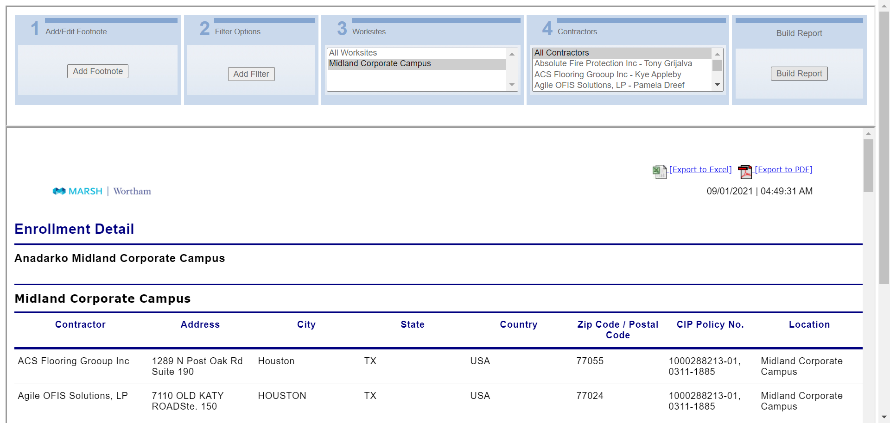 15:19:35 Report Header Name Matched 15:19:35 Report Header Name Matched 15:19:35 Report Generated Successfully 15:19:42 Pdf Generated 
15:19:57 Excel file is not Downloaded Successfully 15:20:02 testEnrollmentDetailReportOld Test has been Passed1 15:20:02 Test Ended -
Report_ContractorReportOld_Test :: testContractorReportOld fail2021-09-01 15:20:11 2021-09-01 15:22:42 0h 2m 31s+422mstestContractorReportOldFunctional Test
Status Timestamp Details 15:20:11 Test Started 15:20:11 Browser Name chrome 15:21:08 https://beta.wrapportal.com/login.aspx?ReturnUrl=%2f Current Url 15:21:08 nourwortham User Name Entered Successfully 15:21:08 C!d9&;MF%R Password Entered Successfully 15:21:10 Clicked On Login Button 15:21:10 Login Successfully 15:21:29 Clicked on Report Module Icon 15:21:31 Respective Program Select Form Dropdown 15:21:40 Contractor Report Report is Selected 15:21:59 Project Selected Successfully 15:22:03 Clicked On Build Report Button 15:22:08 Report Generated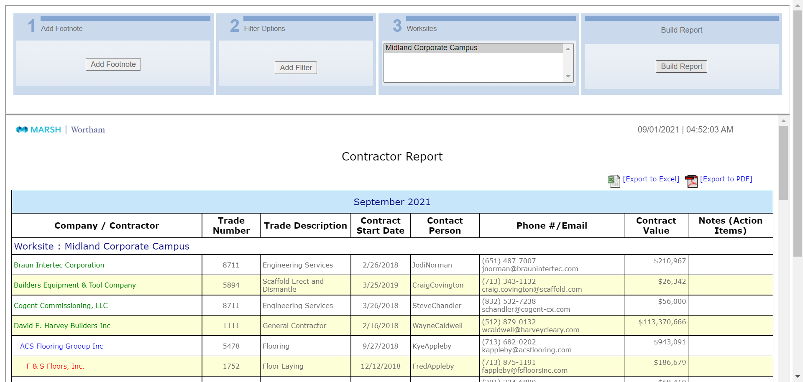 15:22:08 Report Header Name Matched 15:22:08 Report Generated Successfully 15:22:16 Pdf Generated 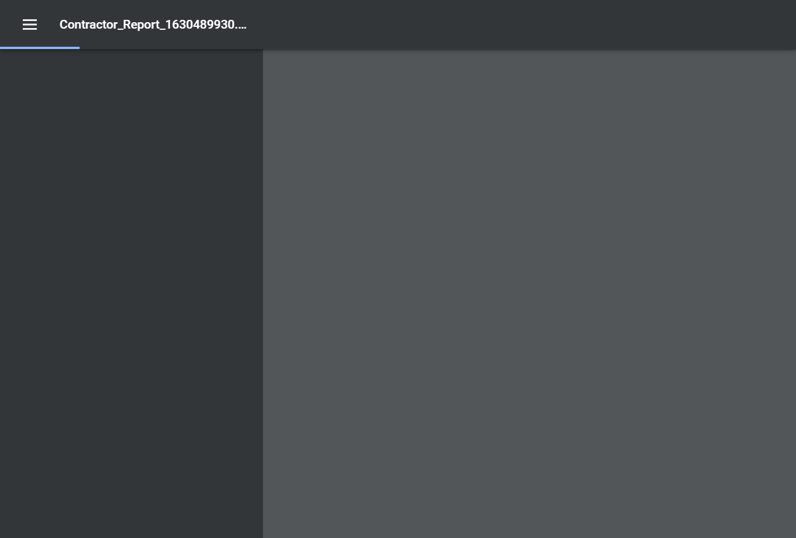 15:22:31 Excel file is not Downloaded Successfully 15:22:42 testContractorReportOld Test has been Passed1 15:22:42 Test Ended -
Report_ContractorProfileOld_Test :: testContractorProfile fail2021-09-01 15:22:59 2021-09-01 15:25:21 0h 2m 22s+425mstestContractorProfileFunctional Test
Status Timestamp Details 15:22:59 Test Started 15:22:59 Browser Name chrome 15:23:49 https://beta.wrapportal.com/login.aspx?ReturnUrl=%2f Current Url 15:23:49 nourwortham User Name Entered Successfully 15:23:49 C!d9&;MF%R Password Entered Successfully 15:23:51 Clicked On Login Button 15:23:51 Login Successfully 15:24:11 Clicked on Report Module Icon 15:24:13 Respective Program Select Form Dropdown 15:24:21 Contractor Profile Report is Selected 15:24:37 Project Selected Successfully 15:24:40 Contractor Selected Successfully 15:24:44 Clicked On Build Report Button 15:24:51 Report Generated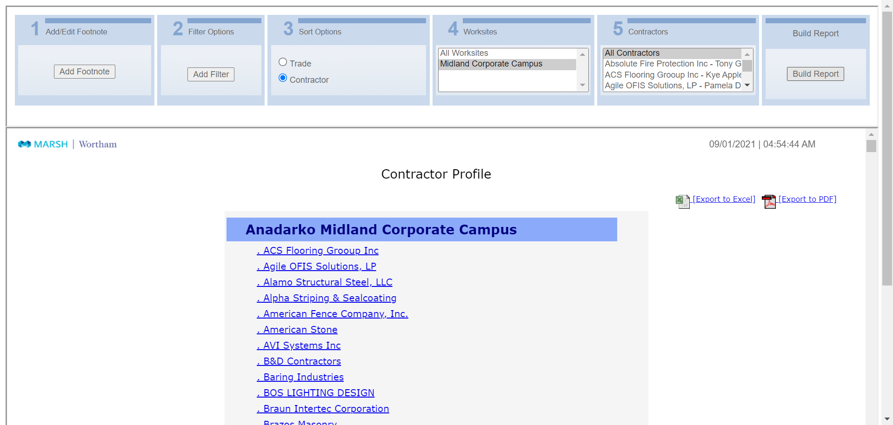 15:24:51 Report Header Name Matched 15:24:51 Report Generated Successfully 15:24:55 Pdf Generated 
15:25:10 Excel file is not Downloaded Successfully 15:25:21 testContractorProfile Test has been Passed1 15:25:21 Test Ended -
Report_ContractorDetailsOld_Test :: testContractorDetailsOld fail2021-09-01 15:25:36 2021-09-01 15:28:15 0h 2m 39s+652mstestContractorDetailsOldFunctional Test
Status Timestamp Details 15:25:36 Test Started 15:25:36 Browser Name chrome 15:26:38 https://beta.wrapportal.com/login.aspx?ReturnUrl=%2f Current Url 15:26:38 nourwortham User Name Entered Successfully 15:26:38 C!d9&;MF%R Password Entered Successfully 15:26:39 Clicked On Login Button 15:26:39 Login Successfully 15:26:59 Clicked on Report Module Icon 15:27:01 Respective Program Select Form Dropdown 15:27:13 Contractor Details Report is Selected 15:27:23 Project Selected Successfully 15:27:26 Contractor Selected Successfully 15:27:30 Clicked On Build Report Button 15:27:33 Report Generated 
15:27:37 Report Header Name Matched 15:27:37 Report Generated Successfully 15:27:49 Pdf Generated 
15:28:04 Excel file is not Downloaded Successfully 15:28:15 testContractorDetailsOld Test has been Passed1 15:28:15 Test Ended -
Report_ContractorDeductTrackingOld_Test :: testContractorDeductTrackingOld fail2021-09-01 15:28:40 2021-09-01 15:30:11 0h 1m 31s+279mstestContractorDeductTrackingOldFunctional Test
Status Timestamp Details 15:28:40 Test Started 15:28:40 Browser Name chrome 15:29:40 org.openqa.selenium.remote.UnreachableBrowserException: Error communicating with the remote browser. It may have died. Build info: version: '4.0.0-alpha-4', revision: 'c2d955b49e' System info: host: 'NOURTEK-100', ip: '192.168.29.211', os.name: 'Windows 10', os.arch: 'amd64', os.version: '10.0', java.version: '15.0.2' Driver info: driver.version: RemoteWebDriver Capabilities {acceptInsecureCerts: false, browserName: chrome, browserVersion: 93.0.4577.63, chrome: {chromedriverVersion: 92.0.4515.107 (87a818b10553..., userDataDir: C:\Users\NDave\AppData\Loca...}, goog:chromeOptions: {debuggerAddress: localhost:52996}, javascriptEnabled: true, networkConnectionEnabled: false, pageLoadStrategy: normal, platform: WINDOWS, platformName: WINDOWS, proxy: Proxy(), setWindowRect: true, strictFileInteractability: false, timeouts: {implicit: 0, pageLoad: 300000, script: 30000}, unhandledPromptBehavior: dismiss and notify, webauthn:extension:credBlob: true, webauthn:extension:largeBlob: true, webauthn:virtualAuthenticators: true} Session ID: a2d19248ac26a8268d1f436f15f2823a Something Went Wrong 15:29:41 Something Went Wrong 
15:29:41 org.openqa.selenium.NoSuchFrameException: no such frame (Session info: chrome=93.0.4577.63) Build info: version: '4.0.0-alpha-4', revision: 'c2d955b49e' System info: host: 'NOURTEK-100', ip: '192.168.29.211', os.name: 'Windows 10', os.arch: 'amd64', os.version: '10.0', java.version: '15.0.2' Driver info: org.openqa.selenium.chrome.ChromeDriver Capabilities {acceptInsecureCerts: false, browserName: chrome, browserVersion: 93.0.4577.63, chrome: {chromedriverVersion: 92.0.4515.107 (87a818b10553..., userDataDir: C:\Users\NDave\AppData\Loca...}, goog:chromeOptions: {debuggerAddress: localhost:52996}, javascriptEnabled: true, networkConnectionEnabled: false, pageLoadStrategy: normal, platform: WINDOWS, platformName: WINDOWS, proxy: Proxy(), setWindowRect: true, strictFileInteractability: false, timeouts: {implicit: 0, pageLoad: 300000, script: 30000}, unhandledPromptBehavior: dismiss and notify, webauthn:extension:credBlob: true, webauthn:extension:largeBlob: true, webauthn:virtualAuthenticators: true} Session ID: a2d19248ac26a8268d1f436f15f2823aReport Header Name Not Matched 15:29:41 Something Went Wrong 
15:30:11 testContractorDeductTrackingOld Test has been Failed2 15:30:11 org.openqa.selenium.NoSuchElementException: no such element: Unable to locate element: {"method":"xpath","selector":"//a[@id='HlinkExportPDF']"} (Session info: chrome=93.0.4577.63) For documentation on this error, please visit: https://selenium.dev/exceptions/#no_such_element Build info: version: '4.0.0-alpha-4', revision: 'c2d955b49e' System info: host: 'NOURTEK-100', ip: '192.168.29.211', os.name: 'Windows 10', os.arch: 'amd64', os.version: '10.0', java.version: '15.0.2' Driver info: org.openqa.selenium.chrome.ChromeDriver Capabilities {acceptInsecureCerts: false, browserName: chrome, browserVersion: 93.0.4577.63, chrome: {chromedriverVersion: 92.0.4515.107 (87a818b10553..., userDataDir: C:\Users\NDave\AppData\Loca...}, goog:chromeOptions: {debuggerAddress: localhost:52996}, javascriptEnabled: true, networkConnectionEnabled: false, pageLoadStrategy: normal, platform: WINDOWS, platformName: WINDOWS, proxy: Proxy(), setWindowRect: true, strictFileInteractability: false, timeouts: {implicit: 0, pageLoad: 300000, script: 30000}, unhandledPromptBehavior: dismiss and notify, webauthn:extension:credBlob: true, webauthn:extension:largeBlob: true, webauthn:virtualAuthenticators: true} Session ID: a2d19248ac26a8268d1f436f15f2823a *** Element info: {Using=xpath, value=//a[@id='HlinkExportPDF']} at jdk.internal.reflect.GeneratedConstructorAccessor39.newInstance(Unknown Source) at java.base/jdk.internal.reflect.DelegatingConstructorAccessorImpl.newInstance(DelegatingConstructorAccessorImpl.java:45) at java.base/java.lang.reflect.Constructor.newInstanceWithCaller(Constructor.java:500) at java.base/java.lang.reflect.Constructor.newInstance(Constructor.java:481) at org.openqa.selenium.remote.codec.w3c.W3CHttpResponseCodec.createException(W3CHttpResponseCodec.java:196) at org.openqa.selenium.remote.codec.w3c.W3CHttpResponseCodec.decode(W3CHttpResponseCodec.java:129) at org.openqa.selenium.remote.codec.w3c.W3CHttpResponseCodec.decode(W3CHttpResponseCodec.java:53) at org.openqa.selenium.remote.HttpCommandExecutor.execute(HttpCommandExecutor.java:161) at org.openqa.selenium.remote.service.DriverCommandExecutor.execute(DriverCommandExecutor.java:83) at org.openqa.selenium.remote.RemoteWebDriver.execute(RemoteWebDriver.java:582) at org.openqa.selenium.remote.RemoteWebDriver.findElement(RemoteWebDriver.java:333) at org.openqa.selenium.remote.RemoteWebDriver.findElementByXPath(RemoteWebDriver.java:451) at org.openqa.selenium.By$ByXPath.findElement(By.java:394) at org.openqa.selenium.remote.RemoteWebDriver.findElement(RemoteWebDriver.java:325) at ObjectRepository.Report_EnrollmentListReportOld.linkExportToPDF(Report_EnrollmentListReportOld.java:90) at TestScript.Report_ContractorDeductTrackingOld_Test.testContractorDeductTrackingOld(Report_ContractorDeductTrackingOld_Test.java:100) at java.base/jdk.internal.reflect.NativeMethodAccessorImpl.invoke0(Native Method) at java.base/jdk.internal.reflect.NativeMethodAccessorImpl.invoke(NativeMethodAccessorImpl.java:64) at java.base/jdk.internal.reflect.DelegatingMethodAccessorImpl.invoke(DelegatingMethodAccessorImpl.java:43) at java.base/java.lang.reflect.Method.invoke(Method.java:564) at org.testng.internal.MethodInvocationHelper.invokeMethod(MethodInvocationHelper.java:133) at org.testng.internal.TestInvoker.invokeMethod(TestInvoker.java:598) at org.testng.internal.TestInvoker.invokeTestMethod(TestInvoker.java:173) at org.testng.internal.MethodRunner.runInSequence(MethodRunner.java:46) at org.testng.internal.TestInvoker$MethodInvocationAgent.invoke(TestInvoker.java:824) at org.testng.internal.TestInvoker.invokeTestMethods(TestInvoker.java:146) at org.testng.internal.TestMethodWorker.invokeTestMethods(TestMethodWorker.java:146) at org.testng.internal.TestMethodWorker.run(TestMethodWorker.java:128) at java.base/java.util.ArrayList.forEach(ArrayList.java:1511) at org.testng.TestRunner.privateRun(TestRunner.java:794) at org.testng.TestRunner.run(TestRunner.java:596) at org.testng.SuiteRunner.runTest(SuiteRunner.java:377) at org.testng.SuiteRunner.runSequentially(SuiteRunner.java:371) at org.testng.SuiteRunner.privateRun(SuiteRunner.java:332) at org.testng.SuiteRunner.run(SuiteRunner.java:276) at org.testng.SuiteRunnerWorker.runSuite(SuiteRunnerWorker.java:53) at org.testng.SuiteRunnerWorker.run(SuiteRunnerWorker.java:96) at org.testng.TestNG.runSuitesSequentially(TestNG.java:1212) at org.testng.TestNG.runSuitesLocally(TestNG.java:1134) at org.testng.TestNG.runSuites(TestNG.java:1063) at org.testng.TestNG.run(TestNG.java:1031) at org.testng.remote.AbstractRemoteTestNG.run(AbstractRemoteTestNG.java:115) at org.testng.remote.RemoteTestNG.initAndRun(RemoteTestNG.java:251) at org.testng.remote.RemoteTestNG.main(RemoteTestNG.java:77)15:30:11 
15:30:11 Test Ended -
Report_Certificate_Log_Old_Test :: testProjectSummaryReportOld fail2021-09-01 15:30:27 2021-09-01 15:33:02 0h 2m 34s+239mstestProjectSummaryReportOldFunctional Test
Status Timestamp Details 15:30:27 Test Started 15:30:27 Browser Name chrome 15:31:32 https://beta.wrapportal.com/login.aspx?ReturnUrl=%2f Current Url 15:31:32 nourwortham User Name Entered Successfully 15:31:32 C!d9&;MF%R Password Entered Successfully 15:31:34 Clicked On Login Button 15:31:34 Login Successfully 15:31:51 Clicked on Report Module Icon 15:31:53 Respective Program Select Form Dropdown 15:31:58 Certificate Log Report is Selected 15:32:19 Project Selected Successfully 15:32:22 Clicked On Build Report Button 15:32:25 Report Generated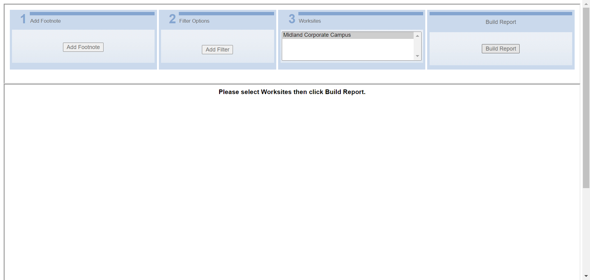 15:32:32 Report Header Name Matched 15:32:32 Report Generated Successfully 15:32:35 Pdf Generated 15:32:51 Excel file is not Downloaded Successfully 15:33:02 testProjectSummaryReportOld Test has been Passed1 15:33:02 Test Ended -
Report_CertificateTrackingReportOld_Test :: testCertificateTrackingReportOld fail2021-09-01 15:33:13 2021-09-01 15:35:39 0h 2m 25s+509mstestCertificateTrackingReportOldFunctional Test
Status Timestamp Details 15:33:13 Test Started 15:33:13 Browser Name chrome 15:34:01 https://beta.wrapportal.com/login.aspx?ReturnUrl=%2f Current Url 15:34:01 nourwortham User Name Entered Successfully 15:34:02 C!d9&;MF%R Password Entered Successfully 15:34:03 Clicked On Login Button 15:34:03 Login Successfully 15:34:21 Clicked on Report Module Icon 15:34:23 Respective Program Select Form Dropdown 15:34:37 Certificate Tracking Report Report is Selected 15:34:47 Project Selected Successfully 15:34:50 Clicked On Build Report Button 15:34:54 Report Generated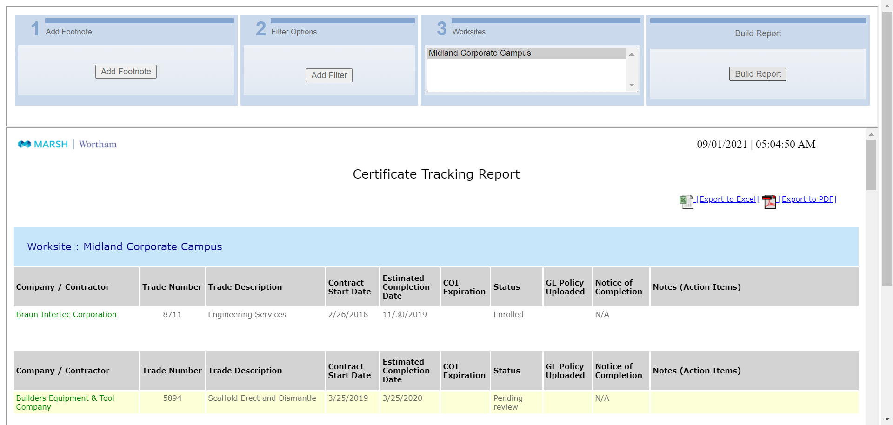 15:34:54 Report Header Name Matched 15:34:54 Report Generated Successfully 15:35:12 Pdf Generated 
15:35:27 Excel file is not Downloaded Successfully 15:35:39 testCertificateTrackingReportOld Test has been Passed1 15:35:39 Test Ended -
Report_ClaimsReportOld_Test :: testClaimsReportOld fail2021-09-01 15:35:56 2021-09-01 15:38:32 0h 2m 36s+460mstestClaimsReportOldFunctional Test
Status Timestamp Details 15:35:56 Test Started 15:35:56 Browser Name chrome 15:36:57 https://beta.wrapportal.com/login.aspx?ReturnUrl=%2f Current Url 15:36:58 nourwortham User Name Entered Successfully 15:36:58 C!d9&;MF%R Password Entered Successfully 15:36:59 Clicked On Login Button 15:36:59 Login Successfully 15:37:24 Clicked on Report Module Icon 15:37:26 Respective Program Select Form Dropdown 15:37:36 Claims Report Report is Selected 15:37:52 Project Selected Successfully 15:37:55 Contractor Selected Successfully 15:37:59 Clicked On Build Report Button 15:38:02 Report Generated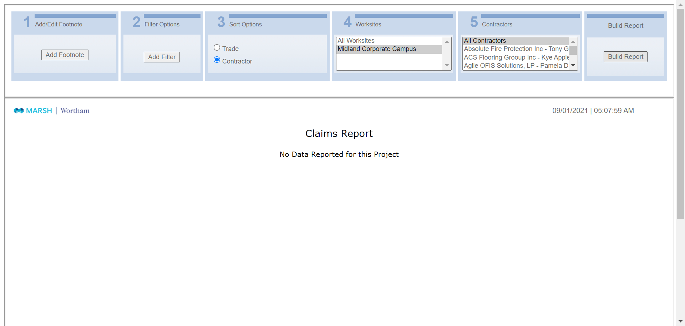 15:38:02 Report Header Name Matched 15:38:02 Report Generated Successfully 15:38:32 testClaimsReportOld Test has been Failed2 15:38:32 org.openqa.selenium.NoSuchElementException: no such element: Unable to locate element: {"method":"xpath","selector":"//a[@id='HlinkExportPDF']"} (Session info: chrome=93.0.4577.63) For documentation on this error, please visit: https://selenium.dev/exceptions/#no_such_element Build info: version: '4.0.0-alpha-4', revision: 'c2d955b49e' System info: host: 'NOURTEK-100', ip: '192.168.29.211', os.name: 'Windows 10', os.arch: 'amd64', os.version: '10.0', java.version: '15.0.2' Driver info: org.openqa.selenium.chrome.ChromeDriver Capabilities {acceptInsecureCerts: false, browserName: chrome, browserVersion: 93.0.4577.63, chrome: {chromedriverVersion: 92.0.4515.107 (87a818b10553..., userDataDir: C:\Users\NDave\AppData\Loca...}, goog:chromeOptions: {debuggerAddress: localhost:51035}, javascriptEnabled: true, networkConnectionEnabled: false, pageLoadStrategy: normal, platform: WINDOWS, platformName: WINDOWS, proxy: Proxy(), setWindowRect: true, strictFileInteractability: false, timeouts: {implicit: 0, pageLoad: 300000, script: 30000}, unhandledPromptBehavior: dismiss and notify, webauthn:extension:credBlob: true, webauthn:extension:largeBlob: true, webauthn:virtualAuthenticators: true} Session ID: d422d86cefb15f6038fd5f3aad93ff07 *** Element info: {Using=xpath, value=//a[@id='HlinkExportPDF']} at jdk.internal.reflect.GeneratedConstructorAccessor39.newInstance(Unknown Source) at java.base/jdk.internal.reflect.DelegatingConstructorAccessorImpl.newInstance(DelegatingConstructorAccessorImpl.java:45) at java.base/java.lang.reflect.Constructor.newInstanceWithCaller(Constructor.java:500) at java.base/java.lang.reflect.Constructor.newInstance(Constructor.java:481) at org.openqa.selenium.remote.codec.w3c.W3CHttpResponseCodec.createException(W3CHttpResponseCodec.java:196) at org.openqa.selenium.remote.codec.w3c.W3CHttpResponseCodec.decode(W3CHttpResponseCodec.java:129) at org.openqa.selenium.remote.codec.w3c.W3CHttpResponseCodec.decode(W3CHttpResponseCodec.java:53) at org.openqa.selenium.remote.HttpCommandExecutor.execute(HttpCommandExecutor.java:161) at org.openqa.selenium.remote.service.DriverCommandExecutor.execute(DriverCommandExecutor.java:83) at org.openqa.selenium.remote.RemoteWebDriver.execute(RemoteWebDriver.java:582) at org.openqa.selenium.remote.RemoteWebDriver.findElement(RemoteWebDriver.java:333) at org.openqa.selenium.remote.RemoteWebDriver.findElementByXPath(RemoteWebDriver.java:451) at org.openqa.selenium.By$ByXPath.findElement(By.java:394) at org.openqa.selenium.remote.RemoteWebDriver.findElement(RemoteWebDriver.java:325) at ObjectRepository.Report_EnrollmentListReportOld.linkExportToPDF(Report_EnrollmentListReportOld.java:90) at TestScript.Report_ClaimsReportOld_Test.testClaimsReportOld(Report_ClaimsReportOld_Test.java:80) at java.base/jdk.internal.reflect.NativeMethodAccessorImpl.invoke0(Native Method) at java.base/jdk.internal.reflect.NativeMethodAccessorImpl.invoke(NativeMethodAccessorImpl.java:64) at java.base/jdk.internal.reflect.DelegatingMethodAccessorImpl.invoke(DelegatingMethodAccessorImpl.java:43) at java.base/java.lang.reflect.Method.invoke(Method.java:564) at org.testng.internal.MethodInvocationHelper.invokeMethod(MethodInvocationHelper.java:133) at org.testng.internal.TestInvoker.invokeMethod(TestInvoker.java:598) at org.testng.internal.TestInvoker.invokeTestMethod(TestInvoker.java:173) at org.testng.internal.MethodRunner.runInSequence(MethodRunner.java:46) at org.testng.internal.TestInvoker$MethodInvocationAgent.invoke(TestInvoker.java:824) at org.testng.internal.TestInvoker.invokeTestMethods(TestInvoker.java:146) at org.testng.internal.TestMethodWorker.invokeTestMethods(TestMethodWorker.java:146) at org.testng.internal.TestMethodWorker.run(TestMethodWorker.java:128) at java.base/java.util.ArrayList.forEach(ArrayList.java:1511) at org.testng.TestRunner.privateRun(TestRunner.java:794) at org.testng.TestRunner.run(TestRunner.java:596) at org.testng.SuiteRunner.runTest(SuiteRunner.java:377) at org.testng.SuiteRunner.runSequentially(SuiteRunner.java:371) at org.testng.SuiteRunner.privateRun(SuiteRunner.java:332) at org.testng.SuiteRunner.run(SuiteRunner.java:276) at org.testng.SuiteRunnerWorker.runSuite(SuiteRunnerWorker.java:53) at org.testng.SuiteRunnerWorker.run(SuiteRunnerWorker.java:96) at org.testng.TestNG.runSuitesSequentially(TestNG.java:1212) at org.testng.TestNG.runSuitesLocally(TestNG.java:1134) at org.testng.TestNG.runSuites(TestNG.java:1063) at org.testng.TestNG.run(TestNG.java:1031) at org.testng.remote.AbstractRemoteTestNG.run(AbstractRemoteTestNG.java:115) at org.testng.remote.RemoteTestNG.initAndRun(RemoteTestNG.java:251) at org.testng.remote.RemoteTestNG.main(RemoteTestNG.java:77)15:38:32 15:38:32 Test Ended -
Report_ContractorCloseOutTracking_OldTest :: testContractorCloseOutTrackingOld fail2021-09-01 15:39:15 2021-09-01 15:41:27 0h 2m 12s+316mstestContractorCloseOutTrackingOldFunctional Test
Status Timestamp Details 15:39:15 Test Started 15:39:15 Browser Name chrome 15:39:54 https://beta.wrapportal.com/login.aspx?ReturnUrl=%2f Current Url 15:39:54 nourwortham User Name Entered Successfully 15:39:54 C!d9&;MF%R Password Entered Successfully 15:39:56 Clicked On Login Button 15:39:56 Login Successfully 15:40:15 Clicked on Report Module Icon 15:40:17 Respective Program Select Form Dropdown 15:40:29 Contractor CloseOut Tracking Report is Selected 15:40:40 Project Selected Successfully 15:40:44 Contractor Selected Successfully 15:40:49 Clicked On Build Report Button 15:40:52 Report Generated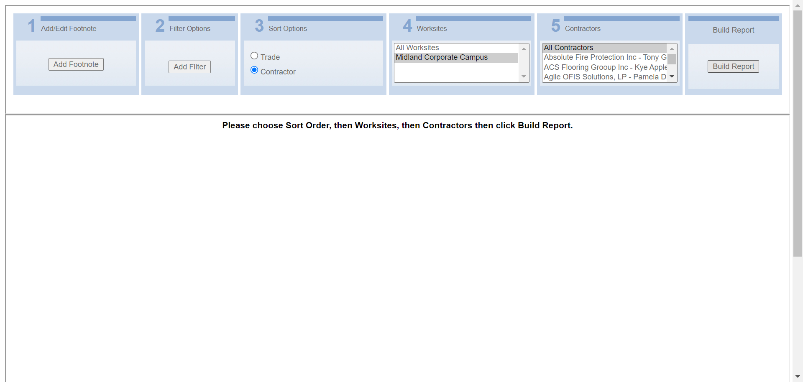 15:40:53 Report Header Name Matched 15:40:53 Report Generated Successfully 15:41:01 Pdf Generated 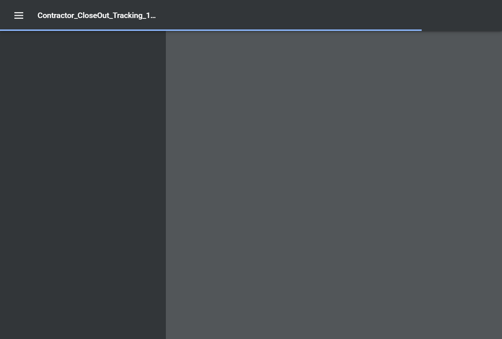 15:41:16 Excel file is not Downloaded Successfully 15:41:27 testContractorCloseOutTrackingOld Test has been Passed1 15:41:27 Test Ended -
Report_ContractorCostSummaryOld_Test :: testContractorCostSummaryOld fail2021-09-01 15:41:44 2021-09-01 15:45:14 0h 3m 29s+688mstestContractorCostSummaryOldFunctional Test
Status Timestamp Details 15:41:44 Test Started 15:41:44 Browser Name chrome 15:42:37 https://beta.wrapportal.com/login.aspx?ReturnUrl=%2f Current Url 15:42:37 nourwortham User Name Entered Successfully 15:42:37 C!d9&;MF%R Password Entered Successfully 15:42:39 Clicked On Login Button 15:42:39 Login Successfully 15:42:59 Clicked on Report Module Icon 15:43:01 Respective Program Select Form Dropdown 15:43:09 Contractor Cost Summary Report is Selected 15:43:19 Project Selected Successfully 15:43:22 Contractor Selected Successfully 15:43:29 Clicked On Build Report Button 15:43:32 Report Generated 15:44:20 Report Header Name Matched 15:44:20 Report Generated Successfully 15:44:47 Pdf Generated 
15:45:02 Excel file is not Downloaded Successfully 15:45:14 testContractorCostSummaryOld Test has been Passed1 15:45:14 Test Ended